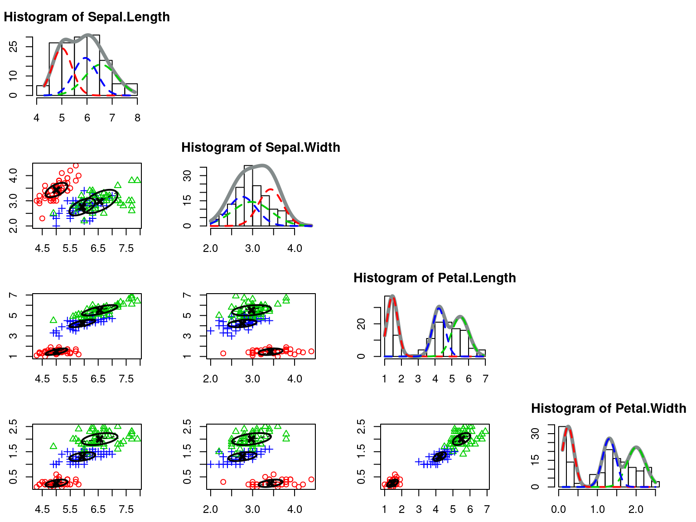
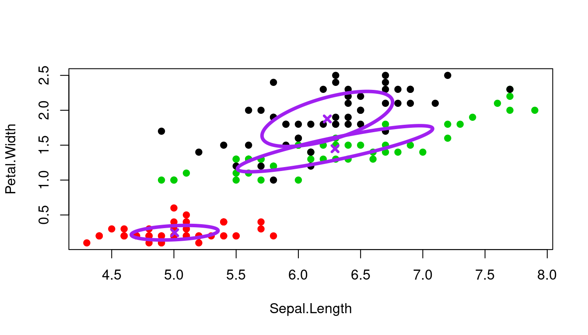
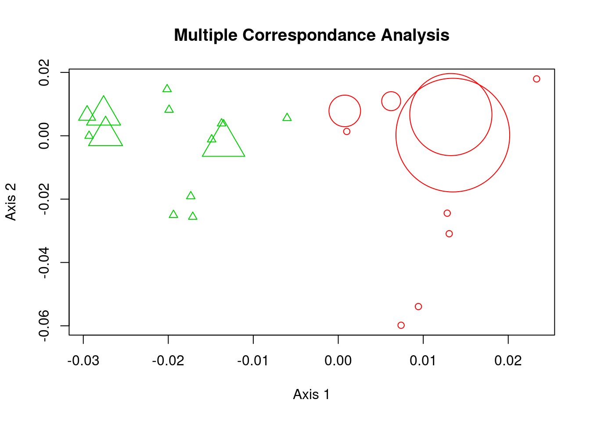
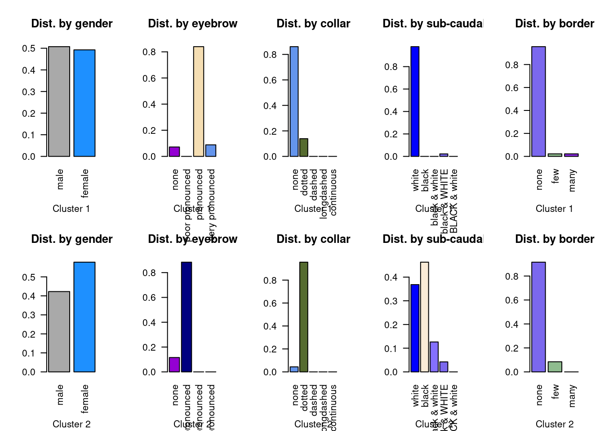
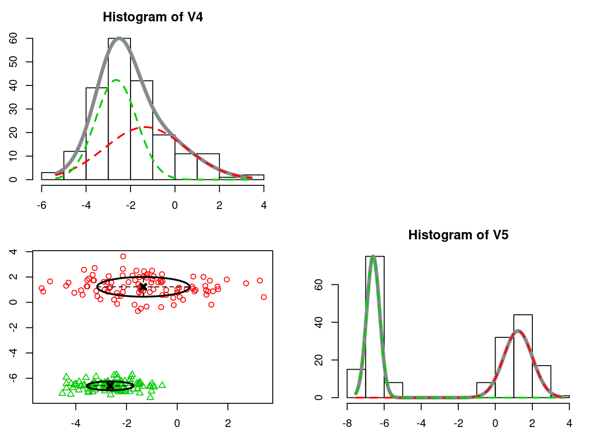
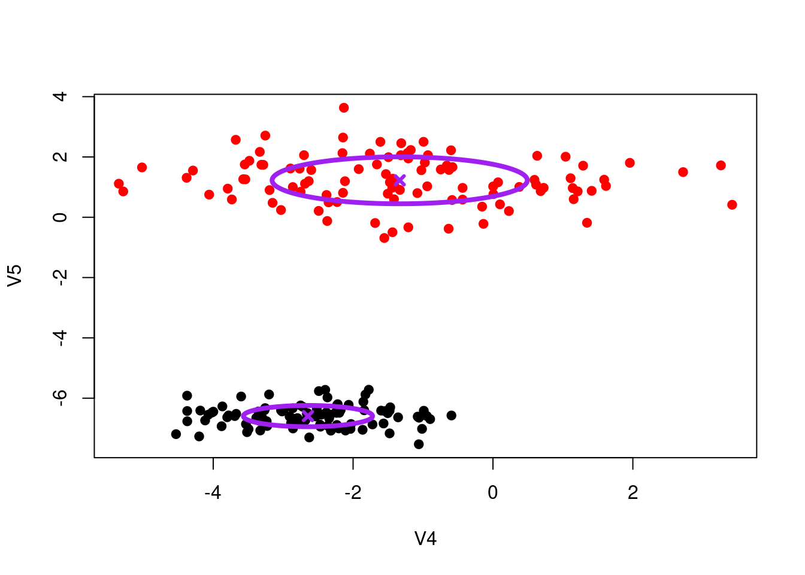
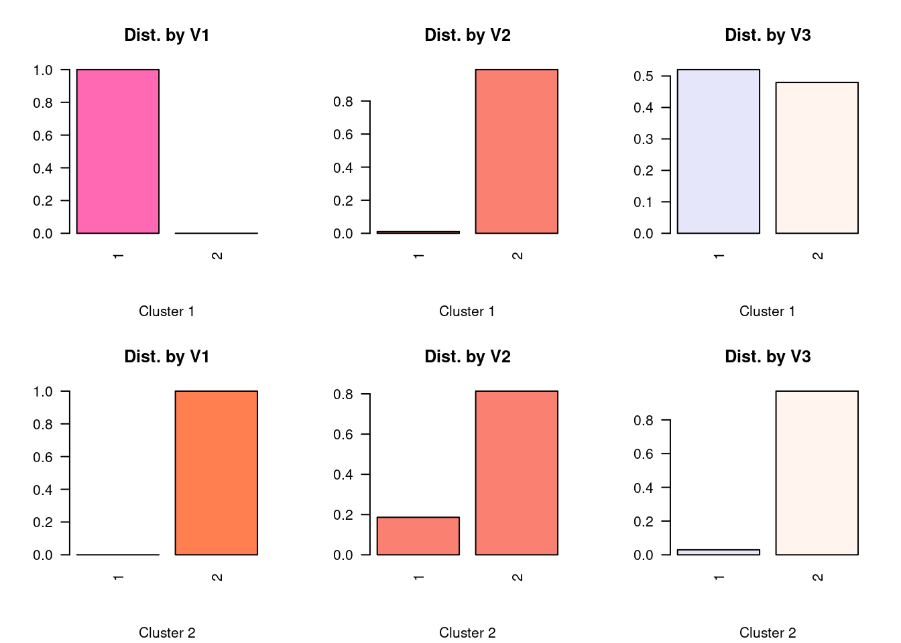

What is mixVarClust
mixVarClust is a Model-Based Clustering package. There are 3 mixture models implemented in the package. The Gaussian mixture model, used for clustering univariate or multivariate continuous variables. The multinomial mixture model, used for clustering categorical variables. The Gaussian-multinomial mixture model, used to group mix features (Gaussian and multinomial).
For the Gaussian mixture model, 3 parsimonious models are implemented, including, one for each family (general, diagonal, spherical) with free parameters. Only 1 model is implemented for the multinomial case.
mixVarClust is intentionally implemented relying only on R base packages, namely, stats, utils, and graphics. These packages come pre-installed with R. Therfore, to use mixVarClust, one do not need any other external dependencies. Most of the functions in the package are implemented utilizing the lapply family functions, for speed.
First I show how to install the package, then I present its content. After that, I illustrate how to use mixVarClust, by comparing it to Rmixmod.
How to install mixVarClust
The source code of mixVarClust is available on my github repository (https://github.com/sowb/mixVarClust). To download and install the package run :
# if you do not have the package "devtools" installed
# uncomment the following line
#install.packages("devtools")
# install mixVarClust
devtools::install_github("https://github.com/sowb/mixVarClust")To load the package and get help, run the following :
#load the package
library(mixVarClust)
#> mixVarClust v 0.0.0.9000
#> Author : @Sow Boubacar
# functions present in the package
help(package = mixVarClust)mixVarClust has 8 functions, including 3 for the computation of the EM algorithm :
- groupMixData(D,…) performs clustering on data-sets with mixed features.
- groupGaussianData(D,…) performs clustering on data-sets with only continuous features, using the Gaussian mixture model.
- groupMultinomialData(D, …) find clusters in a data-set with only categorical features, using the multinomial mixture model.
3 functions to show the results:
- summaryResults (object) gives a summary of the clustering results.
- plotResults(mod, D) plots the clustering results.
- addEllipse(means, varCov) draws ellipses.
2 functions to compute 2 criterias for the model selection :
- criterionBIC(loglik, …) computes the BIC, more suitable for mixture models than AIC.
- criterionAIC(loglik, …) computes the AIC.
Get help for each function using the R help() function. For example, on Rstudio, run the code below on your console, the documentation will shows up on the Help pane :
help(groupGaussianData)Comparing mixVarClust to Rmixmod.
Rmixmod is a well-known R package for mixture modelling. It performs clustering, and supervised classification, of mixture models. The computations are implemented in C++, which makes the package very fast. The package implements the likelihood maximization with EM, CEM and SEM algorithms. It implements also, 14 Gaussian mixture models, 5 Multinomial mixture models, 20 models for mixed data, and 8 specific models for High Dimension data.
For more information for Rmximod, see the website of the authors : http://www.mixmod.org/.
To install and load Rmixmod, run:
# To install Rmixmod, uncomment the following line
#install.packages("Rmixmod")
library(Rmixmod)
#> Loading required package: Rcpp
#> Rmixmod v. 2.1.5 / URI: www.mixmod.orgNext, I compare the clustering performed by using mixVarClust to Rmixmod. For each mixture model, I check if both packages find similar results and which one is the fastest, etc. Keep in mind that, the results shown here might vary, if one changes the value of the set.seed.
Clustering continous data with the Gaussian mixture model
For this comparison, let use the iris data-set, without the label variable Species. Then, let us find the clusters. I start with mixVarClust.
# Load the dataset
data("iris")
# remove the output variable Species
irisNoLabel <- iris[-5]
str(irisNoLabel)
#> 'data.frame': 150 obs. of 4 variables:
#> $ Sepal.Length: num 5.1 4.9 4.7 4.6 5 5.4 4.6 5 4.4 4.9 ...
#> $ Sepal.Width : num 3.5 3 3.2 3.1 3.6 3.9 3.4 3.4 2.9 3.1 ...
#> $ Petal.Length: num 1.4 1.4 1.3 1.5 1.4 1.7 1.4 1.5 1.4 1.5 ...
#> $ Petal.Width : num 0.2 0.2 0.2 0.2 0.2 0.4 0.3 0.2 0.2 0.1 ...- The true proportions of the clusters are :
table(iris[5])/sum(table(iris[5]))
#>
#> setosa versicolor virginica
#> 0.3333333 0.3333333 0.3333333Clustering iris with Rmixmod
set.seed(0)
# clustering with Rmixmod
# find the best family model automatically
#mod_iris <-
# mixmodCluster(
# iris,
# nbCluster = 3,
# model = mixmodGaussianModel(family = "spherical", free.proportions = TRUE)
# )
mixmod_iris <- mixmodCluster(irisNoLabel, nbCluster = 3)
summary(mixmod_iris)
#> **************************************************************
#> * Number of samples = 150
#> * Problem dimension = 4
#> **************************************************************
#> * Number of cluster = 3
#> * Model Type = Gaussian_pk_Lk_C
#> * Criterion = BIC(605.3973)
#> * Parameters = list by cluster
#> * Cluster 1 :
#> Proportion = 0.3333
#> Means = 5.0060 3.4280 1.4620 0.2460
#> Variances = | 0.1550 0.0640 0.0888 0.0239 |
#> | 0.0640 0.0819 0.0305 0.0175 |
#> | 0.0888 0.0305 0.1001 0.0249 |
#> | 0.0239 0.0175 0.0249 0.0217 |
#> * Cluster 2 :
#> Proportion = 0.3541
#> Means = 6.5539 2.9741 5.5057 2.0033
#> Variances = | 0.4058 0.1675 0.2325 0.0624 |
#> | 0.1675 0.2143 0.0800 0.0458 |
#> | 0.2325 0.0800 0.2619 0.0651 |
#> | 0.0624 0.0458 0.0651 0.0568 |
#> * Cluster 3 :
#> Proportion = 0.3125
#> Means = 5.9313 2.7563 4.2264 1.3051
#> Variances = | 0.2152 0.0889 0.1233 0.0331 |
#> | 0.0889 0.1137 0.0424 0.0243 |
#> | 0.1233 0.0424 0.1389 0.0345 |
#> | 0.0331 0.0243 0.0345 0.0301 |
#> * Log-likelihood = -237.5604
#> **************************************************************The above clustering results show:
- The Gaussian model
Gaussian_pk_Lk_Cis chosen by default. But it is possible to choose another model:
options(width = 60)
# all gaussian models in Rmixmod
mixmodGaussianModel() - The BIC value for this model is 605.3974.
- The estimated parameters, the Proportions, the Means, and Variances are presented.
The figure below shows the representation of the mixture model. Each cluster is represented by a different color (blue, red and green). The histogram shows the mixture according to each feature. The plots show the mixture in 2D, for each pair of features, the size of the ellipse indicate the variance of the cluster, its center indicates the mean of the cluster, its shape indicates the Gaussian model type used.
plot(mixmod_iris)
#> [1] 1
#> [1] 2
#> [1] 3
#> [1] 4
Clustering iris with mixVarClust
set.seed(10)
library(mixVarClust)
mvc_iris <- groupGaussianData(irisNoLabel, 3, modelType = "general")
summaryResults(mvc_iris)
#>
#> ==============================================================
#> Number of Observations = 150
#> Number of Variables = 4
#> Number of Clusters = 3
#> ==============================================================
#> Log-liklihood = -189.5026
#> BIC criterion = 599.4731
#> AIC criterion = 467.0051
#> Gaussian Model = general
#> EM algorithm converged after = 165 iterations.
#> ==============================================================
#> CLUSTER 1
#> ==============================================================
#> +++PROPORTIONS = 0.354
#> +++MEANS :
#> Sepal.Length Sepal.Width Petal.Length Petal.Width
#> [1,] 6.232 2.955 5.104 1.876
#>
#> +++VARIANCE-COV MAT :
#> Sepal.Length Sepal.Width Petal.Length Petal.Width
#> Sepal.Length 0.275 0.069 0.221 0.126
#> Sepal.Width 0.069 0.065 0.064 0.052
#> Petal.Length 0.221 0.064 0.307 0.178
#> Petal.Width 0.126 0.052 0.178 0.155
#>
#> CLUSTER 2
#> ==============================================================
#> +++PROPORTIONS = 0.333
#> +++MEANS :
#> Sepal.Length Sepal.Width Petal.Length Petal.Width
#> [1,] 5.006 3.428 1.462 0.246
#>
#> +++VARIANCE-COV MAT :
#> Sepal.Length Sepal.Width Petal.Length Petal.Width
#> Sepal.Length 0.122 0.097 0.016 0.010
#> Sepal.Width 0.097 0.140 0.011 0.009
#> Petal.Length 0.016 0.011 0.030 0.006
#> Petal.Width 0.010 0.009 0.006 0.011
#>
#> CLUSTER 3
#> ==============================================================
#> +++PROPORTIONS = 0.313
#> +++MEANS :
#> Sepal.Length Sepal.Width Petal.Length Petal.Width
#> [1,] 6.295 2.778 4.68 1.449
#>
#> +++VARIANCE-COV MAT :
#> Sepal.Length Sepal.Width Petal.Length Petal.Width
#> Sepal.Length 0.615 0.186 0.724 0.225
#> Sepal.Width 0.186 0.144 0.191 0.070
#> Petal.Length 0.724 0.191 1.001 0.314
#> Petal.Width 0.225 0.070 0.314 0.109
#>
#> ==============================================================
#> * Clusters = 2 2 2 2 2 2 2 2 2 2 2 .... 1 1 1 1 1 1 1 1 1 1 1
#> ==============================================================The package mixVarClust finds similar results to Rmixmod:
- using a General family model.
- in a different order, both packages found the same proportions (0.312, 0.333, and 0.354).
- the means and variances, are similar but not exactly the same.
- EM algorithm in mixVarClust converged after
{r} mvc_iris$nb_iteriterations.
The visualization of the results with mixVarClust is done by the function plotResults. For datasets having more than 2 features, one can choose 2 variables to plot, or use a for loop to plot all pairs of variables.
# plot
plotResults(mvc_iris, irisNoLabel, axis = c(1,4))
Clustering Categorical data using the Multinomial mixture model
The data-set used here contains only categorical variables. The dataset comes with Rmixmod.
set.seed(2)
library(Rmixmod)
data(birds) # dataset from Rmixmod
str(birds)
#> 'data.frame': 69 obs. of 5 variables:
#> $ gender : Factor w/ 2 levels "male","female": 1 2 2 1 1 1 2 2 2 2 ...
#> $ eyebrow : Factor w/ 4 levels "none","poor pronounced",..: 2 1 3 3 3 3 3 2 2 2 ...
#> $ collar : Factor w/ 5 levels "none","dotted",..: 2 2 1 2 2 2 2 2 2 2 ...
#> $ sub-caudal: Factor w/ 5 levels "white","black",..: 1 2 1 1 1 1 1 1 1 1 ...
#> $ border : Factor w/ 3 levels "none","few","many": 2 1 1 1 1 1 1 1 1 1 ...Clustering categorical variables with Rmixmod
In this package, 5 multinomial models are implemented. Without specifying a model in mixmodCluster, it returns the model Binary_pk_Ekjh. To specify another model :
options(width = 100)
# all Rmixmod models
mixmodMultinomialModel() Without specifying a model :
set.seed(2)
mixmod_birds <- mixmodCluster(birds, nbCluster=2)
summary(mixmod_birds)
#> **************************************************************
#> * Number of samples = 69
#> * Problem dimension = 5
#> **************************************************************
#> * Number of cluster = 2
#> * Model Type = Binary_pk_Ekjh
#> * Criterion = BIC(518.9160)
#> * Parameters = list by cluster
#> * Cluster 1 :
#> Proportion = 0.6544
#> Center = 1.0000 3.0000 1.0000 1.0000 1.0000
#> Scatter = | 0.4937 0.4937 |
#> | 0.0761 0.0063 0.1741 0.0917 |
#> | 0.1521 0.1391 0.0043 0.0043 0.0043 |
#> | 0.0390 0.0045 0.0043 0.0259 0.0043 |
#> | 0.0577 0.0289 0.0289 |
#> * Cluster 2 :
#> Proportion = 0.3456
#> Center = 2.0000 2.0000 2.0000 2.0000 1.0000
#> Scatter = | 0.4280 0.4280 |
#> | 0.1203 0.1463 0.0153 0.0107 |
#> | 0.0509 0.0751 0.0080 0.0080 0.0080 |
#> | 0.3641 0.5495 0.1288 0.0485 0.0080 |
#> | 0.1074 0.0940 0.0134 |
#> * Log-likelihood = -198.0635
#> **************************************************************- Visualization of
RmixmodResults
# Visualization with Rmixmod
plot(mixmod_birds)
#> round digits : 6NULL
#> duplicated individuals : 46NULL
Clustering categorical variables with mixVarClust
mixVarClust contains only one multinomial model.
set.seed(914)
mvc_birds <- groupMultinomialData(birds, K=2)
summaryResults(mvc_birds)
#>
#> ==============================================================
#> Number of Observations = 69
#> Number of Variables = 5
#> Number of Clusters = 2
#> ==============================================================
#> Log-liklihood = -194.8894
#> BIC criterion = 512.5678
#> AIC criterion = 447.7787
#> EM algorithm converged after = 20 iterations.
#> ==============================================================
#> CLUSTER 1
#> ==============================================================
#> +++PROPORTIONS = 0.656
#> +++PROBABILITIES alpha :
#> [,1] [,2] [,3] [,4] [,5]
#> male 0.507 . . . .
#> female 0.493 . . . .
#> none . 0.072 0.861 . 0.956
#> poor pronounced . 0 . . .
#> pronounced . 0.84 . . .
#> very pronounced . 0.088 . . .
#> dotted . . 0.139 . .
#> dashed . . 0 . .
#> longdashed . . 0 . .
#> continuous . . 0 . .
#> white . . . 0.978 .
#> black . . . 0 .
#> black & white . . . 0 .
#> black & WHITE . . . 0.022 .
#> BLACK & white . . . 0 .
#> few . . . . 0.022
#> many . . . . 0.022
#>
#> CLUSTER 2
#> ==============================================================
#> +++PROPORTIONS = 0.344
#> +++PROBABILITIES alpha :
#> [,1] [,2] [,3] [,4] [,5]
#> male 0.423 . . . .
#> female 0.577 . . . .
#> none . 0.116 0.044 . 0.916
#> poor pronounced . 0.884 . . .
#> pronounced . 0 . . .
#> very pronounced . 0 . . .
#> dotted . . 0.956 . .
#> dashed . . 0 . .
#> longdashed . . 0 . .
#> continuous . . 0 . .
#> white . . . 0.368 .
#> black . . . 0.463 .
#> black & white . . . 0.126 .
#> black & WHITE . . . 0.042 .
#> BLACK & white . . . 0 .
#> few . . . . 0.084
#> many . . . . 0
#>
#> ==============================================================
#> * Clusters = 2 2 1 1 1 1 1 2 2 2 2 .... 1 1 1 1 1 1 1 1 1 1 1
#> ==============================================================- Visualization or
mixVarClustresults
# Visualization with mixVarClust
plotResults(mvc_birds, birds)
- Both packages find exactly the same proportions (0.34 and 0.65).
- 34.4% of the observations make up one cluster, while 65.6% make up an other cluster.
- In
Rmixmod, the results scatter values “corresponds to the probability of being different from the most frequent modality, in a special constrained case that all modalities have the same probability except this modal value.” (explained here by M. Christophe Biernacki, the senior developper of MIXMOD). - In the results above, the rows are the modalities and the columns are the variables. In
mixVarClust, the multinomial paramaters computed are the probabilities of each modality, in each variable. For instance, in the Cluster 2, the probability of having the modalitymalein the first feature is 0.507, infemaleit is 0.577 The dot.means, the corresponding modality does not exist in the variable.
Clustering mix features with Gaussian-Multinomial mixture model
Let use the dataset heterodata from Rmixmod. It has 2 continuous variables and 3 categorical variables.
library(Rmixmod)
data("heterodata")
str(heterodata)
#> 'data.frame': 200 obs. of 5 variables:
#> $ V1: Factor w/ 2 levels "1","2": 2 1 1 2 1 2 2 2 2 1 ...
#> $ V2: Factor w/ 2 levels "1","2": 2 2 2 2 2 2 2 2 1 2 ...
#> $ V3: Factor w/ 2 levels "1","2": 2 1 1 2 1 2 2 2 2 1 ...
#> $ V4: num -0.434 -1.543 -3.532 -0.584 -3.601 ...
#> $ V5: num 0.587 -6.429 -6.86 0.572 -5.944 ...summary(heterodata)
#> V1 V2 V3 V4 V5
#> 1: 98 1: 20 1: 54 Min. :-5.349 Min. :-7.5278
#> 2:102 2:180 2:146 1st Qu.:-3.162 1st Qu.:-6.5777
#> Median :-2.230 Median :-0.4381
#> Mean :-1.976 Mean :-2.6058
#> 3rd Qu.:-1.152 3rd Qu.: 1.1966
#> Max. : 3.420 Max. : 3.6323Clustering heterodata with Rmixmod :
set.seed(3)
mixmod_het <- mixmodCluster(heterodata, 2)
summary(mixmod_het)
#> **************************************************************
#> * Number of samples = 200
#> * Problem dimension = 5
#> **************************************************************
#> * Number of cluster = 2
#> * Model Type = Heterogeneous_pk_Ekjh_Lk_Bk
#> * Criterion = BIC(1617.7609)
#> * Parameters = list by cluster
#> Gaussian Parameters
#> * Cluster 1 :
#> Proportion = 0.5100
#> Means = -1.3335 1.2259
#> Variances = | 3.3280 0.0000 |
#> | 0.0000 0.6061 |
#> * Cluster 2 :
#> Proportion = 0.4900
#> Means = -2.6450 -6.5940
#> Variances = | 0.8524 0.0000 |
#> | 0.0000 0.1245 |
#> Multinomial Parameters
#> * Cluster 1 :
#> Proportion = 0.5100
#> Center = 2.0000 2.0000 2.0000
#> Scatter = | 0.0049 0.0049 |
#> | 0.1893 0.1893 |
#> | 0.0340 0.0340 |
#> * Cluster 2 :
#> Proportion = 0.4900
#> Center = 1.0000 2.0000 1.0000
#> Scatter = | 0.0051 0.0051 |
#> | 0.0152 0.0152 |
#> | 0.4798 0.4798 |
#> * Log-likelihood = -769.1431
#> **************************************************************The visualization of Rmixmod results:
For heterogenous data, we must specify which part of the results to plot, qualitative or quantitative.
plot(mixmod_het, showOnly="quantitative")
#> [1] 4
#> [1] 5
Clustering heterodata dataset with mixVarClust
Like Rmixmod, I use the diagonal family model for the continuous part of this Gaussian-multinomial model:
set.seed(3)
library(mixVarClust)
mvc_het <- groupMixData(heterodata, 2, modelType = "diagonal")
summaryResults(mvc_het)
#>
#> ==============================================================
#> Number of Observations = 200
#> Number of Variables = 5
#> Number of Clusters = 2
#> ==============================================================
#> Log-liklihood = -768.0227
#> BIC criterion = 1652.608
#> AIC criterion = 1580.045
#> Gaussian Model = diagonal
#> EM algorithm converged after = 6 iterations.
#> ==============================================================
#> CLUSTER 1
#> ==============================================================
#> +++PROPORTIONS = 0.49
#> +++MEANS :
#> V4 V5
#> [1,] -2.645 -6.594
#>
#> +++VARIANCE-COV MAT :
#> [,1] [,2]
#> [1,] 0.852 0.000
#> [2,] 0.000 0.124
#>
#> +++PROBABILITIES alpha :
#> [,1] [,2] [,3]
#> 1 1 0.01 0.52
#> 2 0 0.99 0.48
#>
#> CLUSTER 2
#> ==============================================================
#> +++PROPORTIONS = 0.51
#> +++MEANS :
#> V4 V5
#> [1,] -1.333 1.226
#>
#> +++VARIANCE-COV MAT :
#> [,1] [,2]
#> [1,] 3.328 0.000
#> [2,] 0.000 0.606
#>
#> +++PROBABILITIES alpha :
#> [,1] [,2] [,3]
#> 1 0 0.186 0.029
#> 2 1 0.814 0.971
#>
#> ==============================================================
#> * Clusters = 2 1 1 2 1 2 2 2 2 1 2 .... 1 1 2 1 1 1 1 1 2 1 2
#> ==============================================================plotResults(mvc_het, heterodata) For this dataset also, both packages give comparable results :
- They find almost the same proportions.
- The gaussian parameters are the same, but the multinomial parameters are different.
- The model obtained by
Rmixmod(1617.7609) is slightly better thanmixVarClust(1652.608).
How fast mixVarClust is compared to Rmixmod
Let use the package rbenchmark to compare the speed of mixVarClust and Rmixmod.
library("rbenchmark")
benchmark(
mixvarclust = groupGaussianData(
iris[-5],
3,
modelType = "general",
randomInit = 10,
endIter = TRUE,
nbIter = 200
),
rmixmod = mixmodCluster(iris[-5], 3, model = mixmodGaussianModel(
family = "general", free.proportions = TRUE
))
)
#> test replications elapsed relative user.self sys.self user.child
#> 1 mixvarclust 100 76.388 18.527 76.339 0.048 0
#> 2 rmixmod 100 4.123 1.000 4.123 0.000 0
#> sys.child
#> 1 0
#> 2 0- Rmixmod is extremely faster than my package.
Conslusions
- Overall my package
mixVarClustperforms well the clustering, almost likeRmixmod. - But of course, slower than Rmixmod. The latter is implemented in C++.
- In addition,
Rmixmodis a lot more richer, with almost 50 models.
Problems encountered with mixVarClust:
- In clustering continuous variables, this problem
Error in solve.default(s) : system is computationally singular: reciprocal condition number = 5.40801e-18, might happen, but rarely. When it is the case, change the gaussian model type, or change the number of random initialisation of the algorithm.
References
- mixVarClust Statistical Documentation
- Rmixmod Statistical Documentation